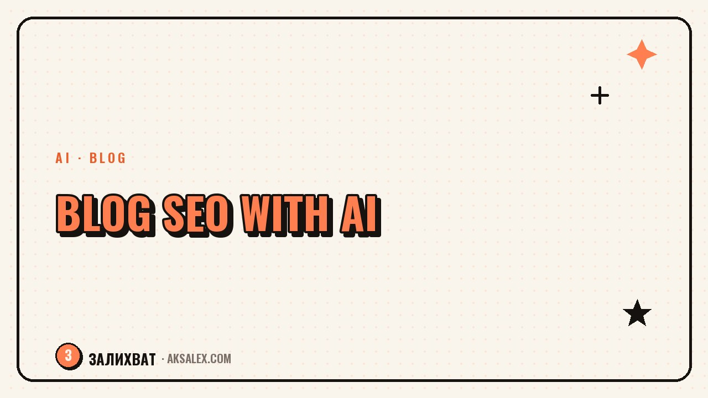

SEO for Your Blog: How to Promote Posts with AI

Why a blog should think about SEO at all
Social media shows a post to your followers for a day or two, and then it sinks in the feed. An article in search results works for months: someone types a query into Google or Yandex, finds your text, and comes to your site on their own, with no ads and no reliance on reach. It's a steady source of new readers.
The catch is that a search engine can't read minds - it goes by the words, the structure, and how well the text answers a person's question. That's where AI comes in handy: it helps you understand what people are looking for and format the text so the search engine reads it correctly.
Keyword research with AI
Keyword research used to require separate paid services. Now you can ask an AI to sketch out a list of the phrasings your audience uses when searching for an answer to a specific problem. Give it context: your blog's topic, the reader's profile, and the post's goal - and you'll get a rough list of queries.
How to frame the task for the AI
- Describe the post's topic in one sentence and state who the reader is
- Ask it to split the keywords into groups: informational and commercial queries
- Specify that you want phrasings in natural language, not corporate stiffness
- Ask it to add long-tail queries of three or four words
After that, you need to check the list yourself: cut the irrelevant options and keep the phrasings that really resemble how your audience talks. AI gives you a draft, not a finished solution.
Headline, meta description, and text structure
The headline is what a person sees in the results before they click through to your site. It should contain the main keyword while still sounding like a normal phrase, not a string of words for a robot. The meta description is the short text under the headline in the results that explains what the reader will get inside the article.
| Element | What matters |
|---|---|
| Headline (H1) | Main keyword up front, under 60 characters, no clickbait |
| Meta description | Under 160 characters, answers the question in the query |
| Subheadings (H2, H3) | Break the text into logical blocks, make it easier to read |
| First paragraph | Answers the core of the query right away, no long intro |
AI helps nicely with a draft of headlines and meta descriptions: ask for several options and pick the one that sounds natural. Don't take the first option unseen - sometimes an AI reaches for cliches like 'top secrets' or 'find out right now.'
How to check the finished text before publishing
Once the text is written, it helps to run it through an AI once more - but this time in the role of an editor, not an author. Ask it to check whether the key query appears in the first paragraph, in one of the subheadings, and closer to the end of the text. This doesn't mean forcing the keyword in - if the phrase doesn't sit naturally in a sentence, it's better to use a synonym.
Text written for a search engine rather than a reader usually pleases neither the reader nor the rankings - search engines have long been able to tell living text from a pile of keywords.
It's also worth checking internal links: if you already have an article on a related topic, link to it from the new post. This helps the reader stay on the site longer and signals to the search engine that the blog has a structure rather than scattered texts.
Common mistakes in SEO for a blog
The most common mistake is keyword stuffing. If the phrase 'AI for a blog' repeats in every other sentence, the text reads heavily, and the search engine also counts that as a minus, not a plus.
- Writing the headline for clicks rather than the substance of the article
- Ignoring structure - a wall of text with no subheadings
- Copying competitors' phrasings word for word
- Forgetting the mobile version of the site - most readers visit from a phone
- Publish and forget - without updating old posts, traffic sags over time
SEO rarely delivers a result after a single post. It's a cumulative effect: the more high-quality, structured articles you have on topics people actually search for, the more confidently the blog climbs in the results.
Where to start today
You don't need to rewrite the whole blog at once. Take one recent or popular article and run it through the steps above: check the headline, meta description, structure, and keyword density. Then apply the same approach to every new post - and in a few months you'll see the difference in organic traffic.
Frequently Asked Questions
Can AI take over blog SEO entirely?
No. It speeds up the routine - keyword research, headline drafts, structure checks - but decisions about topic, tone, and the final text stay with you. Search engines value expertise and a living voice, not automatically generated text.
How many keywords should one article have?
There's no strict number. Usually one main query and two or three related phrasings are enough, placed where they sound natural - in the headline, subheadings, and a couple of paragraphs of text.
Do I need to update already-published articles for SEO?
Yes, this is called content updating. Every few months it's worth reviewing old posts: refreshing facts, adding internal links, and adjusting headlines if more precise query phrasings have appeared.
Does site speed affect search rankings?
Yes, it's one of the ranking factors. Heavy images and slow page loads can lower your positions even if the text is well written. It's worth checking site speed separately from working on the text.
How do I know when SEO work has started to pay off?
Look at organic traffic from search engines in your site analytics over several months, not over a week. Growth is usually gradual: at first an article lands on the second or third page of results, then it slowly climbs higher with regular updates.
Enjoyed this one? Here's what to read next. Auto-replies to common comments with AI - without losing genuine connection with your audience.
Read the article →not by hand